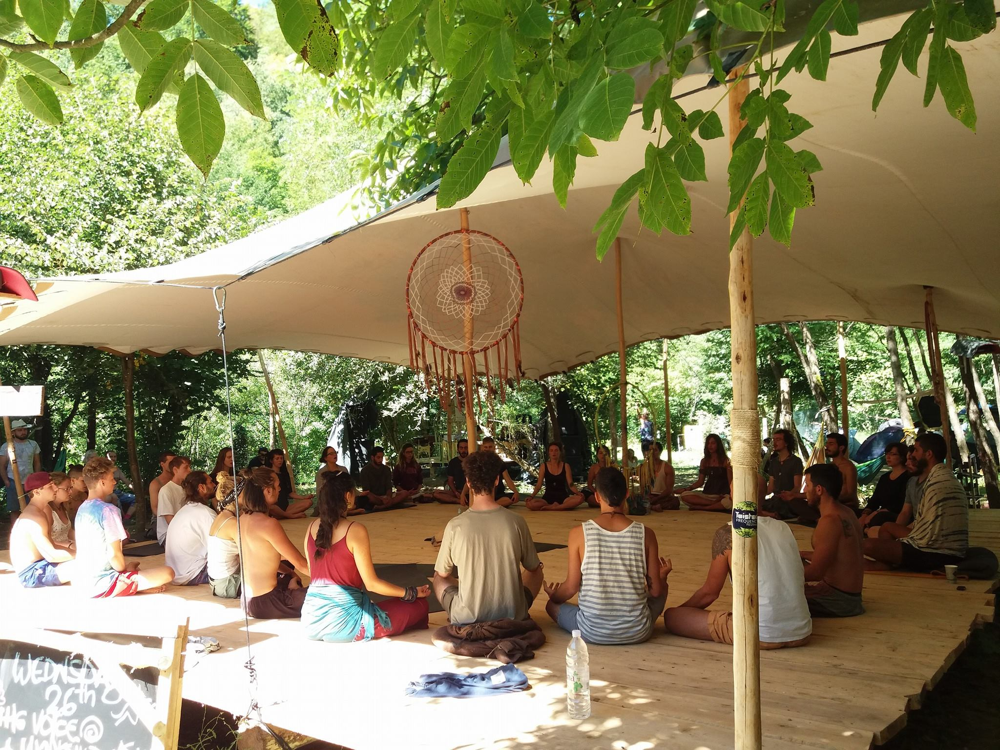

In het Bamboehuis is er tijd voor workshops op vrijdagavond en/of in het weekend. Workshops zijn er in vele soorten en maten.
Eerstvolgende workshops
| Datum | Tijd | Naam | Aantal deelnemers | Vrije plekken? | Prijs | Opmerking |
| zaterdag 9 nov 2019 | 13:00 tot 16:00 uur | Playing The Voice | Max 20 | ja | 45 | De workhop is in het engels en de docent is Stefano Sgarbi. Lees meer |
Heb je een idee voor een workshop of kun jij zelf een workshop geven? Laat het ons weten!
Voice has been traditionally used for centuries as a tool for exploring reality and the mind, in spiritual ceremonies, private practices and in artistic contexts. In fact, we are all accustomed to human voice mainly for its communicational role and we often don’t consider its potential effect, beyond any meaning, on our consciousness and existence. Through the means of repetition (mantras) and special vocal techniques, such as overtone singing and Tibetan chants, trancelike, meditative and deep listening states can be achieved purely with a mindful use of the Voice.
During the workshop, collective activities are going to immerse the participants in a deep exploration of the potential, towards liberation, of the most accessible, portable and primal instrument we have been gifted with: our Voice.

Goal
Providing for the participants a safe and relaxed environment where
the voice can be liberated and explored through insights about alternative
singing and breathing techniques, mantras and creative uses of the voices
through a series of practical activities and theoretical discussions.
Benefits
Format A series of group activities, including body, mind and vocal Works, will gently immerse the participants in a deep exploration of the potential of the voice and its effects. Theoretical insights will aid in the consolidation of the participants' own vocal exploration. Ideas and observations will be addressed further in between activities.